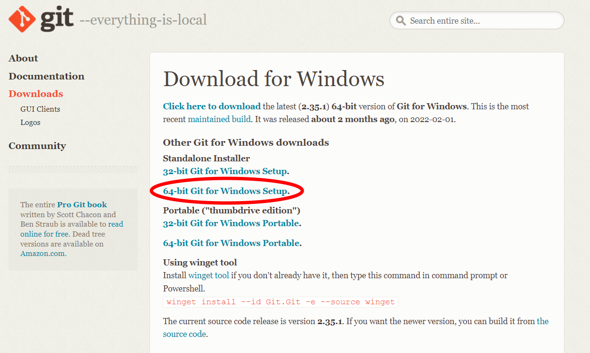

gitのインストール
このURLからgitをダウンロードをする
Git - Downloads[Windows]を選んで、

[64-bit Git for Windows Setup.]を選ぶ

ダウンロードが終わったら、インストーラを開き、画面の手順にそって進み、インストールを終わらせる
そして、コマンドプロンプトから
git --version
と打ち、Enterを押して、以下の画像のような文字が出てくることを確認するgitの初回設定
まず、コマンドプロンプトを開く
そして、以下のコマンドでユーザ情報を設定する
git config --global user.name "自分のGitHubの名前"
git config --global user.email "自分のGitHubのEメールアドレス"
次は、GitHubアクセス時に、毎度毎度パスワードを入力しなくてもいいように、Windows側で管理してくれるように設定する
git config --global credential.helper wincred
終わったら、GitHubのWEBサイトに飛ぶ
GitHubGitHubにログインし、[Settings]を開く
そして、左のタブの一番下の[Developer settings]を開き、[Personal access tokens]→[Generate new token]を押す


以下の画像のように、Noteには分かりやすい名前、Expirationは1年後、repoにのみチェックを付けて、[Generate token]を押す

画面に出てきた ghp_ から始まる文字列をコピーする
※ghp_から始まる文字列（トークン）はパスワードと同様にアカウントへのアクセスができるものなので、自分以外の人には知られないように！！！

Windowsのコントロールパネルを開き、[ユーザーアカウント]→[資格情報マネージャー]→[Windows 資格情報]の順に進む
[汎用資格情報の追加]を押し、インターネットまたはネットワークのアドレスに git:https://自分のGitHubの名前@github.com、
ユーザー名に自分のGitHubの名前、パスワードにghp_から始まる文字列を入力し、OKを押す